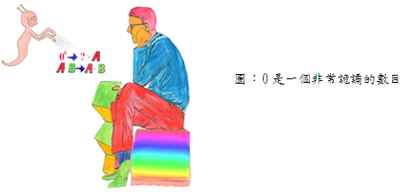

一、 零的特性

1: 零是偶數或是奇數?
答案：
0是偶數，習慣把……-8，-4，-2，0，2，4，6，8……叫作偶數，而把……-7，-5，-3，-1，1，3，5，7，9……叫作奇數，因此0因該稱為偶數。
2: 零是整數嗎?是正整數或負整數?
答案:
0不屬於正整數或負整數，但它是整數，通常整數包括正整數、零、負整數三部份，所以0既不屬於正整數也不屬於負整數。
3: a0=? 00=?
答案:
在a>O情況下，a0定為1，即a0=1；但00無意義。
4: 0/0=?；0/a=?；a/0=?
答案：
在a≠0情況下，0/a =0
a≠0時0/a=0
a≠0時 a/0 = ∞；在數學上無意義，∞表示無窮大。
0/0可為任何值，在數學上也無意義。
除以0:至詭論之路
正數愈大，其倒數愈小。正數愈小，其倒數愈大。我們可將1除以極小的數而得出極大的數字:
1/1 = 1
1/0.1=10
1/0.01= 100
1/0.001 = 1000
但為什麼不可以將1直接除以0呢？
1/0=?也許是世界上最大的數，但沒有人知道呢？同時除以零這個除式也帶來一些困擾。因為除以零在數學上無明確意義而且是自相矛盾的。假如我們做一個 360/9=40的除法，要驗算答案，有一種辦法就是把它乘回來：即9X40=360。假設有人寫出1/0而試圖求出它的意義。則它不能是一個數，因為若1/O = n，n代表某數。我們試用"乘回來"來驗證此方程式。可求得1=OXn=O。換句話說，1=0，這是不通的。此方程式不符合驗算。若任一異於0的數除以0時亦有同樣的情形。
0除0的除法又是一種例外。若寫0/0=6用"乘回法"加以驗算。0= 6X0=0，符合驗算。如果說6必是答案，又不竟然，因為0/0=9亦符合驗算。這種運算似乎暗示0/0可能為任何數，這種結果不可能有什麼用處。為了這些理由，在數學上，將除以0是廢棄不談的。
我們已知，除以零可得矛盾的結果。當它是顯而易見時，很容易避免，例如像8×0=4×0，將方程式兩端除以0得出8=4，一眼可以看出係除以零的錯誤。但是有時候"除以零"的錯誤被掩蔽而看不出來。
若設x=1[左右兩端皆用x2去減]
則x2－x = x2－1
得x(x-1) = (x-1)(x+1)
兩端皆除以(x-1)；得：
x = (x+1)
以x=1代入；得：
1= 2
產生矛盾，這是兩端除以(x-l) = 0的原因。
雖然除以零不在數學的範圍內，但是玩一些符號遊戲，尤其是當他們模稜兩可且意義不完全明確時是相當有趣的。雖然這樣做相當危險，但也是發現的來源，許多數學上的重大結論都是這樣玩出來的。
我們如對1除以0作無意義的追求，企圖求得最大的數。我們所得到的，可能不是一個數。雖然不是一個數，卻是巨大的? 無可否認的，這個疑問像是很無聊，但無論如何，我們還是研究它。
關於"除以0"問題的討論，真的很有趣了，請看以下的計算。
設有相等的值，a和b，即 a=b
兩邊同乘以ab；得a2b = ab2，
兩邊同減去b3得a2b – b3= ab2- b
因式分解 b(a2-b2) = b2 (a-b)
得 b(a-b)(a+b) = b2 (a-b)
兩邊同除以a-b 得b (a+b) = b2
因此 ab = O
即，2個數相等時，將該2個數乘相起來時，為零。以具體例子來說。是若7=7，則7×7=0，真是奇怪，但為什麼會發生這種事呢？又是用0去除的原因，讀者先生請回想，a=b則a-b=0，演算過程中我們使用兩邊同除以a-b ，亦即兩邊同除以0，因此產生矛盾。
現在我們回頭討論1/0=?的問題，9<1/0嗎? l01000000000 < 1/0嗎? 我們要如何才能決定大小。如果我們處理的是普通的數字就很簡單。像25<999/4的不等式，如果將不等式的兩邊數字乘上4，檢查所得的不等式就可驗出此式是正確。即25×4 = 100 <999。現在我們從9 < 1/0開始驗證。各乘以0得9×O <1，此不等式成立。對於任何巨大的數目，我們也可以找出任何大數目乘以非常小的數目z(比0還大)使它們的積小於1。即y∙z＜1，例如y是一個非常大的數目，我們馬上可找出z=1/(y+1)這麼小的數字乘以y，它們的積小於1，因此y∙z＜1。即y＜1/z＜1/ 0（y是任何巨大數目，z非常小的值但大於0）
從上述可知，不管1/0是什麼東西，它必然是巨大的，因為它似乎比你所能說出的任意數為大。
試加1於1/0以"增大"此數。
1/0 + 1= ?
我們該怎麼加呢?如果我們處理的是普通的分數，我們會把它們放在
共同的公分母上來相加，例如：
(2/3 )+ 1= (2+1×3)/3 =5/3
如果我們如法炮製，可求得：
1/0 + 1=(1+0×1)/0 = 1/0
換句話說，不論1/0是什麼，若加1於其上，仍然不變。與一般常識相違背乎。事實上l//0是那麼大的"大"，因此加上1，甚至千萬兆也不能影響它一點兒。就像大海中加上一滴水，仍然一樣。若寫出1/0+l01000，也是一樣仍然是大海中的一滴水。
100/0是不是比1/0大呢?不是它的100倍大嗎?取不等式100/0>1/0，乘上分母來驗算。出乎意料之外:100/0＞l/O，此不等式不能成立。因為如果不等式成立，則發生0>0的奇怪現象。既然100/0＞l/O不等式不能成立，那麼100/0=l/0，如何？將二端乘上0=0，符合驗證。同理，我們"斷定 x(任何數)/0=1/0。這些皆因為1/0是那麼大，以致乘上任何正數仍然毫無影響。
此時，對數學有所研究的讀者也許會說:「那麼，無窮大是什麼呢?是否1/0=無窮大?」將無窮大的概念化成意義明確而有用的介紹進入數學，其途徑很多。但是追根究底無窮大卻不是一個數目，它是既富魅力又富於詭詐。
三、無限大和a0=1的概念
前面已談過0不能做除數，否則會產生許多末荒謬的結果，趁著本文討論零的機會，我們打鐵趁熱，再詳細解釋無限大和a0=1的概念，算是狗尾續貂。
無限大並不是一個數目，不能把它當作數目處理
數學上常用「無限大」這種說法，但是數學並沒有無限大這個數存在，數學上說到無限大只表是一個概念，是說它可以一直的增大，超出任何你所能說出的數目。但無論如何不能將它當作數目處理。
例如，當x以正值無限的接近0時，8/x到底怎樣變化？
x=0.1時 8/x=80
x=0.01時 8/x=800
x=0.001時 8/x=8000
x=0.0001時 8/x=80000
因此可以知道，若x以正值無限接近0時，8/x無限增大，通常以：
x→0時 8/x→∞表示
在此我們要強調的是∞的存在只是一個概念，不能將它當作數目處理，否則會產量矛盾。
例如：
∞加8之後仍是∞，因此寫作：
∞+8 = ∞
若兩邊減∞，得：
8 = 0
又把∞放大10倍後，仍然∞，寫作：
10×∞= ∞
把兩邊除以∞，得：
10= 1
產生各種奇怪現象，故絕對不能將∞當作數目處理。
為什麼a0=1？
a0=1不是證明出來，而是約定a0=1。理由如下：
首先，若把a×a×a×……×a(a有m個)寫成am，則設m、n皆為正數時，am×an= am+n。
其次，若設m、n為正數，且m＞n，則am÷an= am-n。又設m、n為正數，則(am)n= amn。如此，可得下列指數定理：
am×an= am+n…………(1)
am÷an= am-n…………(2)
(am)n= amn…………(3)
式(2)是敘述m、n為正數，且m＞n，現在我們將其擴充至所有整數值。首先，若m=n，亦即am-n= a0將如何？我們看式(2)左邊，am÷an= am÷am= 1 ，右邊am+n= a0，因此若要兩邊相等，只好定義a0= 1了。其次若n為負整數，要怎麼辦？式(2)若m=0，則左邊是a0÷an=1÷an=1/ an，而右邊則為a-n，若要二式相等，只好定義a-n=1/ an。
如此定義a0= 1；a-n=1/ an，則指數定律對於m、n所有整數都成立，不管m、n是零、正或負，m大於或小於n。